Building a centralized forecasting solution for the Oil & Gas industry
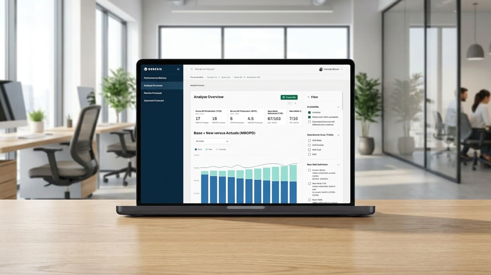
The Challenge
"Forecasting wasn't only slow — it directly affected operational reliability and planning accuracy across teams."
Operational teams at Hess relied on fragmented tools and spreadsheets to manage production forecasting. This resulted in duplicated work, inconsistent versions of forecasts, and low confidence in decision-making. The goal was to centralize forecasting workflows into a single platform, reduce manual data reconciliation, and give teams a shared source of truth to make faster, more informed decisions.
Grounding the redesign in real behavior.
We ran a 4-week discovery phase with cross-functional stakeholders — not just to gather requirements, but to understand the behavioral patterns behind how forecasts were actually created, reviewed and approved.
Four insights shaped everything that followed: Excel was being used as database, tracker and communication tool all at once; lack of version control created constant misalignment; analysts needed a safe space for scenario testing; and leaders needed quick access to risk signals without digging for them.
Mapping the system before redesigning it.
We mapped the entire MBR and QLA forecasting cycles to visualize how data, decisions and responsibilities flowed across teams. The blueprint revealed redundant steps, information silos, manual handoffs and high cognitive load during critical decision moments — and became our north star for redesigning the workflow, not just digitizing the old one.

Designing for behaviors, not departments.
Analysts needed deep control, scenario simulation and traceability. Decision-makers needed fast insights, comparisons and risk visibility. These behavioral differences — not org charts — informed the navigation structure, information hierarchy and level of interface complexity for each role.
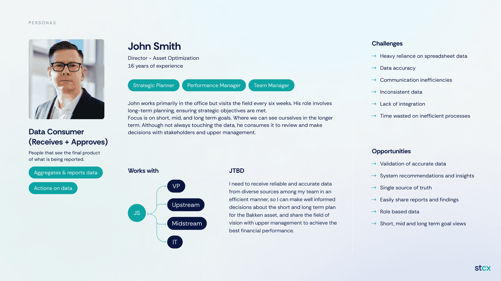
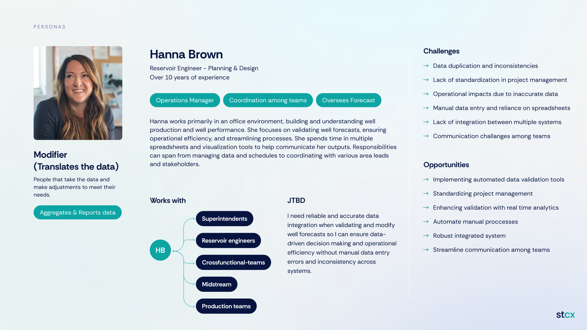
Following the forecast from data to decision.
We mapped key journeys — reviewing a new forecast, simulating alternative scenarios, aligning teams before decision deadlines — to identify friction points like manual handoffs, unclear ownership and missing validation steps. These directly informed feature prioritization.
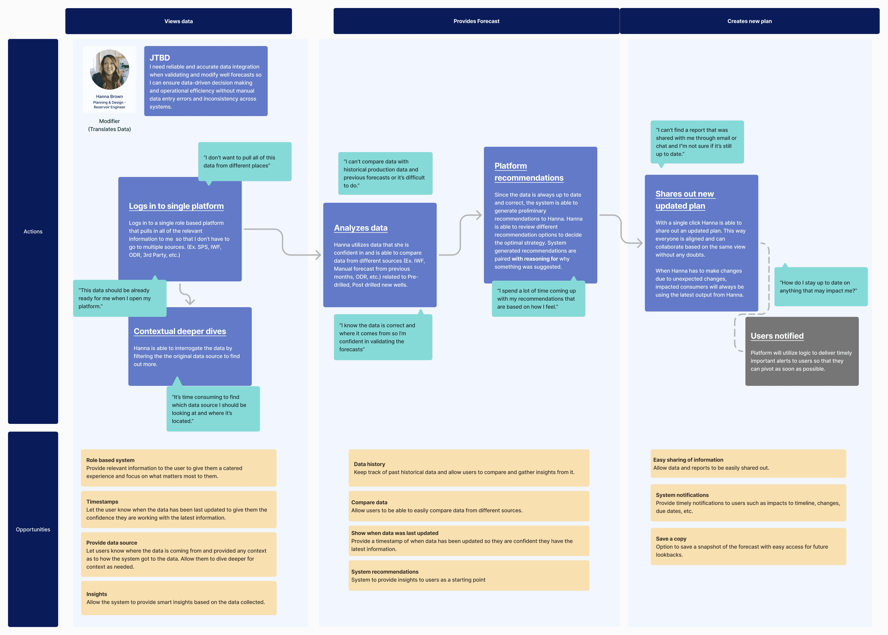
Four principles guided every decision.
Clarity over visual complexity. Comparison as a primary action. Traceability of assumptions. Progressive disclosure for advanced analysis. Every interface and interaction decision that followed was measured against these four principles.
One platform, shaped differently per role.
The platform adapts to different user roles, surfacing forecast creation tools, status indicators, performance dashboards and version comparison views depending on who's logged in.
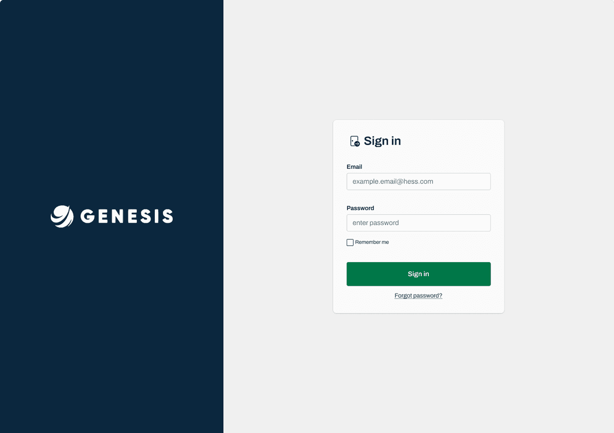
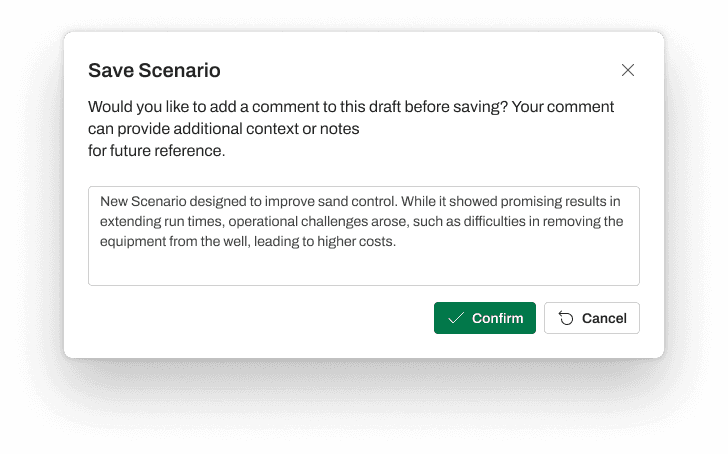
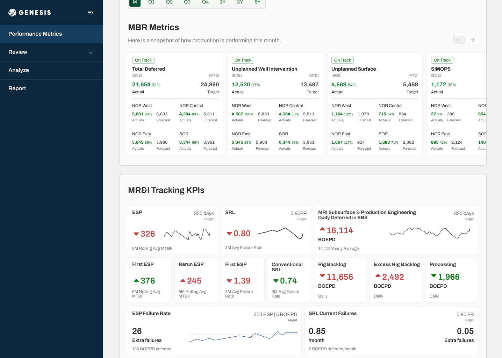
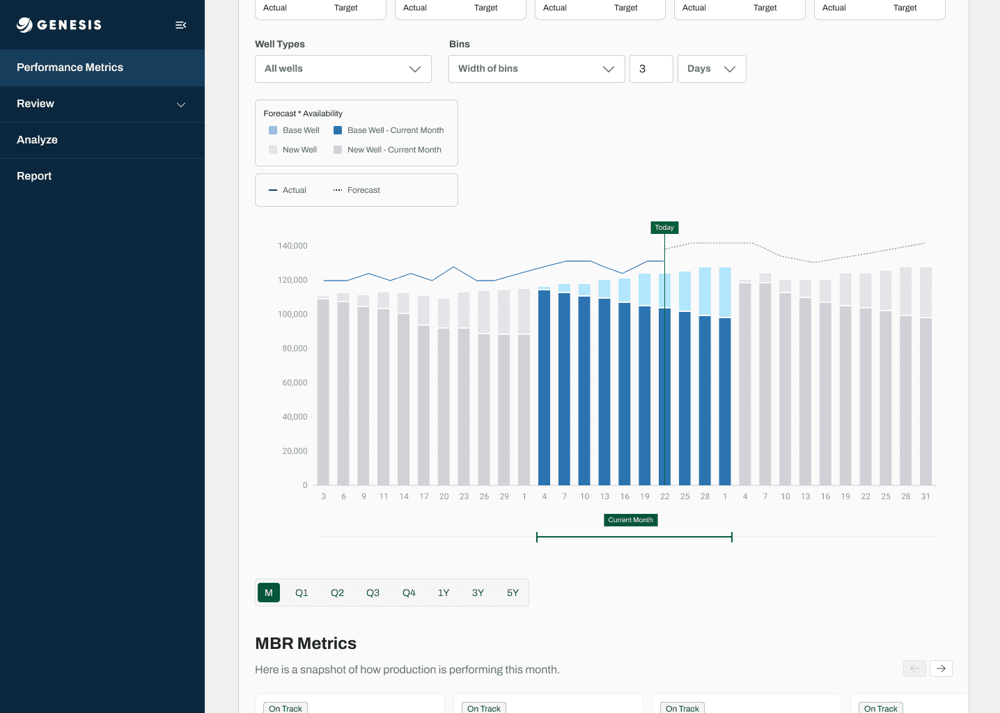
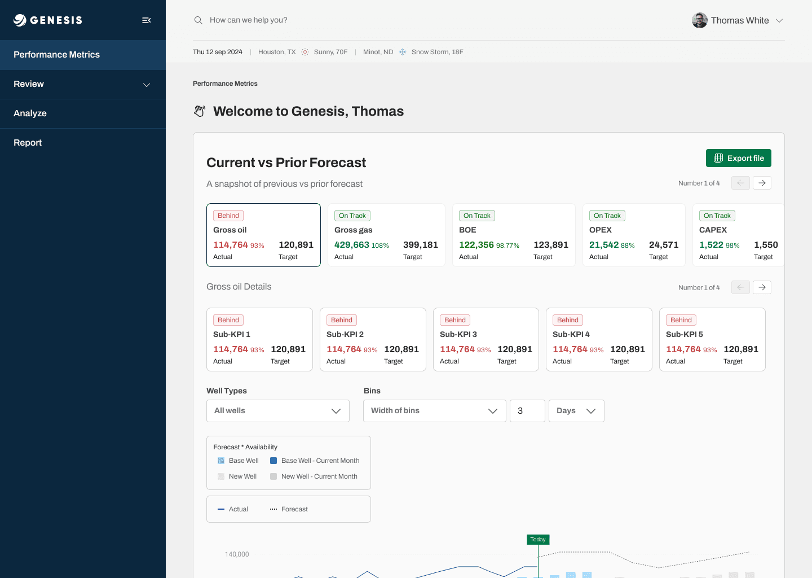
The home dashboard: current vs. prior forecast, at a glance, the moment you log in.
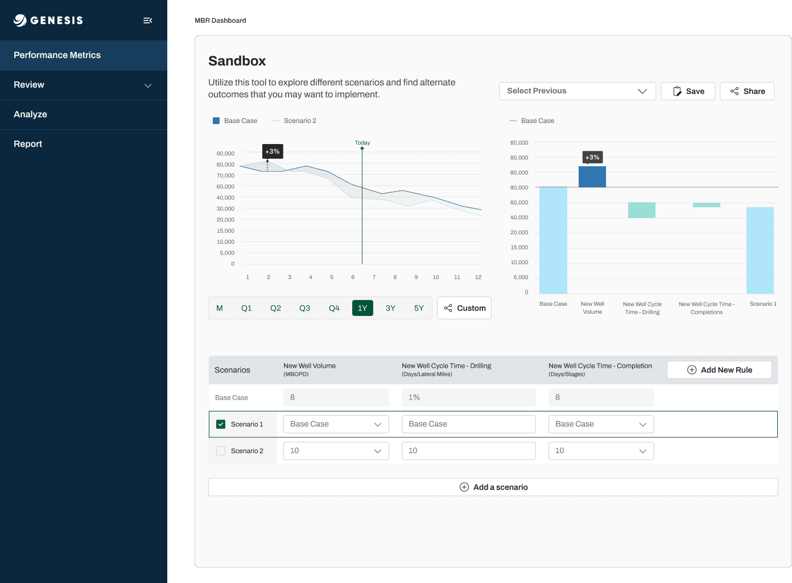
The Sandbox — the feature at the center of this project. Users simulate production scenarios by adjusting variables like cycle time, output volume and failure rate, with real-time updates. It replaced offline Excel simulations and became the tool analysts trust most for testing "what if" before committing to a plan.
Making dense data scannable.
Special attention went into data visualization — letting users compare forecast versions, identify anomalies, filter time-series data and export annotated insights without leaving the flow they were already in.
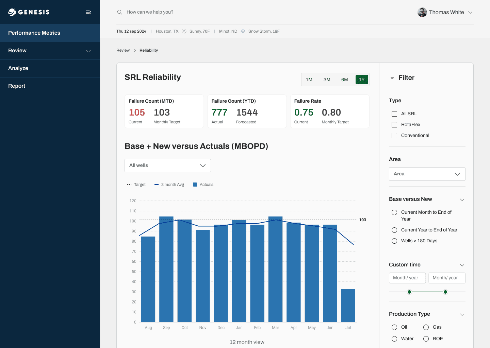
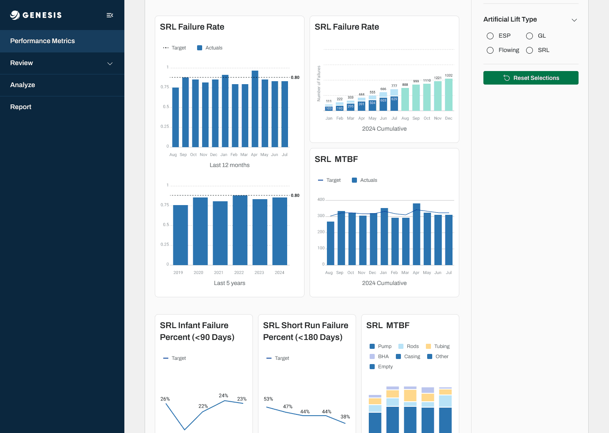
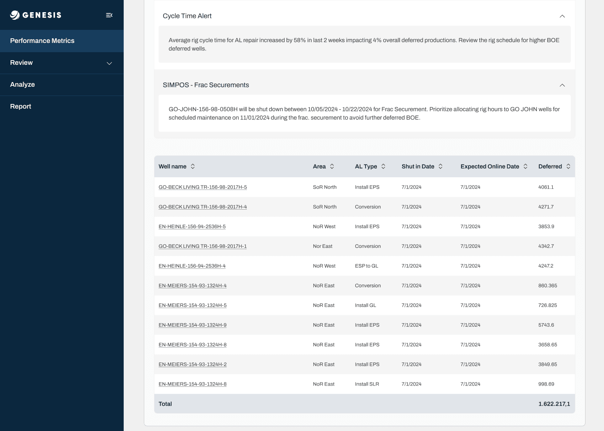
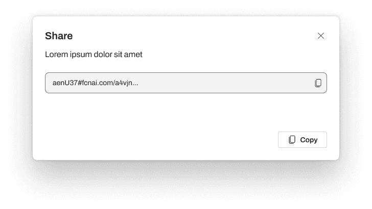
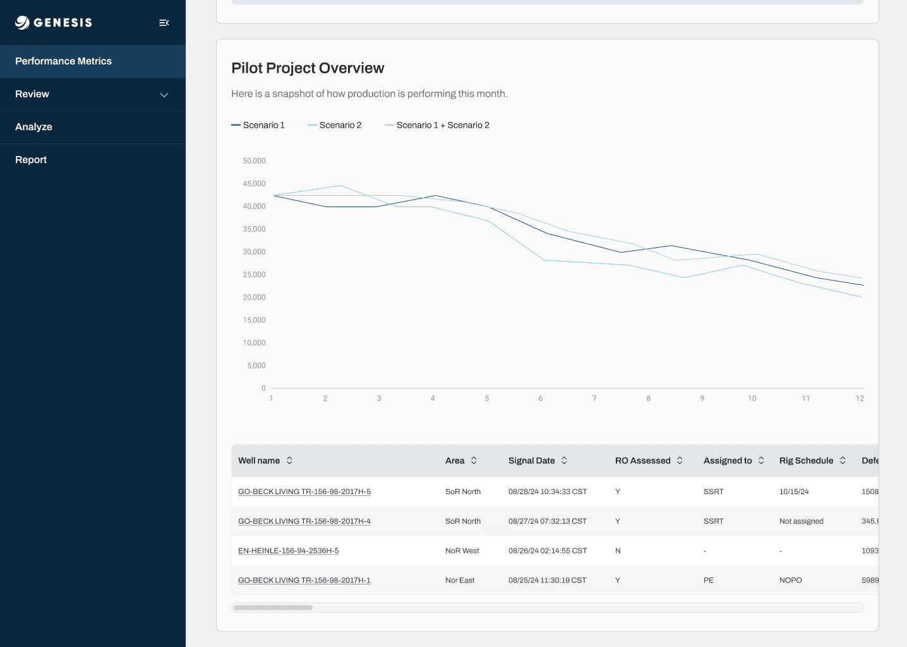
Pilot Project Overview — comparing scenarios against actuals, with the underlying well data one click away.
From fragmented process to product-driven system.
Beyond the numbers, the platform shifted forecasting from a fragmented, manual process into a scalable system teams could actually trust — and build on.
Impactful UX in complex systems is less about visual polish and more about reducing cognitive load, supporting decision-making, and designing for long-term product evolution.
Let's build
something great.
danierocruz@gmail.com
Usually respond within 24h · Open to remote, B2B & SaaS projects.